측량및지형공간정보산업기사 (2011-03-20 기출문제)
1과목: 응용측량
1. 공사현장에서 경사진 구역의 토지면적을 측정 하고자 한다. 정확한 토지면적의 기준은?
- 실제 지표상(earth surface)의 면적
- 수평면(level surface)상의 면적
- 평균경사면(slope surface)상의 면적
- 평균표고상(average level)의 면적
(정답률: 54%)

2. 직선 터널 양끝의 좌표가 A(120，60), B(240, 70)이고 각각의 표고가 80m，82m일 때 이 터널의 경사거리는? (단, 단위는 m 이다.)
- 115.12m
- l20.43m
- 125.44m
- 130.43m
(정답률: 알수없음)
3. 그림과 같은 지역의 토공량을 구하기 위해 사각형 격자의 교점에 대하여 수준측량을 하여 각각의 절토고(단위:m)를 얻었다. 토공량은? (단，모든 격자의 크기는 가로 5m，세로 4m 이다)
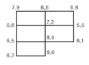
- 675.5m3
- 666.5m3
- 333.3m3
- 298.5m3
(정답률: 85%)
4. 축척 1:50000 지형도의 주곡선 간격이 20m이다. 이때 5%의 기울기로 노선을 선정하려면 주곡선 사이의 도상거리는 얼마인가?
- 4mm
- 8mm
- 12mm
- 25mm
(정답률: 40%)
5. 하천측량을 실시하는 가장 중요한 목적은 무엇인가?
- 하천의 계획, 유지관리, 보존, 개발을 위한 설계 및 시공에 필요한 자료를 얻기 위하여
- 하천공사의 공사 비용을 정확히 산출하기 위하여
- 하천의 평면도, 종단면도를 작성하기 위하여
- 하천의 수위, 기울기, 단면을 알기 위하여
(정답률: 90%)
6. 도로의 선형에서 횡단선형에 일반적으로 사용 되지 않는 것은?
- 직선
- 쌍곡선
- 2차 포물선
- 3차 포물선
(정답률: 알수없음)
7. 교각 l=60°，곡선반지름 R=200m인 원곡선의 외환E(External secant)는?
- 282.847m
- 1⑤.561m
- 80.267m
- 30.940m
(정답률: 59%)
8. 지형의 체적계산법 중 단면법에 의한 계산법으로서 비교적 가장 정확한 결과를 얻을 수 있는 것은?
- 점고법
- 중앙단면법
- 양단면평균법
- 각주공식에 의한 방법
(정답률: 72%)
9. 하천측량에서 유속관측에 관한 설명으로 옳지 않은 것은?
- 유속관측에 따르면 같은 단면 내에서는 수심이나 위치에 상관없이 유속의 분포는 일정하다.
- 유속계 방법은 주로 평상시에 이용하고 부자 방법은 홍수 시에 많이 이용된다.
- 보통 하천이나 수로의 유속은 경사, 유로의 형태, 크기와 수량, 풍향 등에 의해 변한다.
- 유속관측은 유속계와 부자에 의한 관측 및 하천기울기를 이용하는 공식을 사용할 수 있다.
(정답률: 70%)
10. 보기에서 노선의 종단면도에 기입하여야 할 사항만으로 짝지어진 것은?
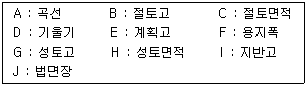
- A，B, D, E, G，I
- A, C，F，H，I，J
- B, C, F，G，H, J
- B, D，E，F，G，I
(정답률: 74%)
11. 지하시설물도 작성시 각종 시설물의 혼동이 발생하지 않도록 색상으로 구분한다. 지하시설물의 종류별 기본색상으로 연결이 옳지 않은 것은?
- 통신시설-녹색
- 가스시설-황색
- 상수도시설-주황색
- 하수도시설-보라색
(정답률: 알수없음)
12. 단곡선 설치에서 곡선반지름이 100m 이고 교각이 60° 이다. 곡선시점의 말뚝 위치가 No10+2m 일 때 곡선의 종점 위치까지의 거리는? (단，중심 말뚝 간격은 20m 이다.)
- 104.72m
- 157.08m
- 306.72m
- 359.08m
(정답률: 65%)
13. 터널 중심선측량의 가장 중요한 목적은?
- 정확한 방향과 거리측정
- 터널 입구의 정확한 크기 설정
- 인조점의 올바른 매설
- 도벨의 정확한 위치 결정
(정답률: 82%)
14. 시설물의 경관을 수직시각(θv)에 의하여 평가하는 경우，시설물이 경관의 주제가 되고 쾌적한 경관으로 인식되는 수직시각의 범위로 가장 적합한 것은?
- 0° ≤ θv ≤ 15°
- 15° ≤ θv ≤ 30°
- 30° ≤ θv ≤ 45°
- 45° ≤ θv ≤ 60°
(정답률: 62%)
15. 그림과 같은 경우에 심프슨 제 1법칙에 의한 면적을 구하는 식으로 적당한 것은?
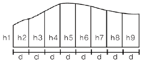
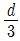
[(h1 - h9) + 4(h2 + h4 + h6 +h8) + 2(h3+ h5 + h7)] (h1 +2h2 + 3h3 + 4h4 + 5h5 + 6h6 + 7h7 + 8h8+ 9h9)
(h1 +2h2 + 3h3 + 4h4 + 5h5 + 6h6 + 7h7 + 8h8+ 9h9)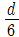
[(h1 +h9) +4(h2 + h4 + h6 + h8) + 2(h3 + h5 +h7) (h1 + 2h2 + 3h3 + 4h4 + 5h5 + 6h6 + 7h7 + 8h8 + 9h9)
(h1 + 2h2 + 3h3 + 4h4 + 5h5 + 6h6 + 7h7 + 8h8 + 9h9)
(정답률: 64%)
16. 그림과 같은 터널에서 AB 사이의 경사가 1/250이고 BC사이의 경사는 1/100 일 때 측점 A와 C사이의 지반고 차이는 얼마인가?
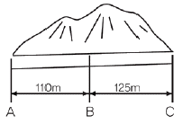
- 1,690m
- 1,645m
- 1,600m
- 1,590m
(정답률: 65%)
17. 삼각형의 면적을 구하기 위해 밑변 (a)=5.0cm，높이(b)=10cm를 얻었다. 이 도면의 축척이 1/500이었다면 실제 면적은 얼마인가?
- 625m2
- 520m2
- 500m2
- 125m2
(정답률: 79%)
18. 그림과 같이 중앙종거(M)가 20m, 곡선반지름(R)이 100m일 때, 원곡선의 교각은 얼마 인가?
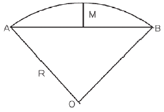
- 36° 52′ 12″
- 73° 44′ 23″
- 110° 36′ 35″
- 147° 28′ 46″
(정답률: 67%)
19. 비행장의 입지선정을 위해 고려하여야할 주요 요소로 가장 거리가 먼 것은?
- 주변지역의 개발형태
- 항공기 이용에 따른 접근성
- 지표면 활용상태
- 비행장 운영에 필요한 지원시설
(정답률: 알수없음)
20. 하천의 수위관측소 설치 장소에 대한 설명으로 틀린 것은?
- 하안과 하상이 양호하고 세굴 및 퇴적이 없는 곳
- 지천에 의한 수위변화가 생기지 않는 곳
- 교각 등의 구조물에 의하여 수위에 영향을 받지 않는 곳
- 상•하부가 곡선으로 이어져 유속이 최소가 되는 곳
(정답률: 59%)
2과목: 사진측량 및 원격탐사
21. 항공사진측량에 의하여 제작된 수치지도와 위치 정확도에 영향을 주는 요소와 가장 거리가 먼 것은?
- 도화기의 정확도
- 지상기준의 정확도
- 사진의 축척
- 지도 레이어의 개수
(정답률: 54%)
22. 사진 상의 좌표(x, y)=(10mm, 10mm) 위치에서 도로선의 교차점이 관측되었다. 이 지점의 X좌표값을 지상좌표계로 160m로 가정한다면 이 지점의 고도값은? (단, 주점의 위치는 (-1mm, 1mm)이고, 초점거리는 153mm, 투영중심은 (50m, 50m, 1540m)이며, 사진좌표계와 지상좌표계의 모든 좌표축의 방향은 일치한다.)
- Z = -10m
- Z = 0m
- Z = 10m
- Z = 20m
(정답률: 91%)
23. 초점거리 15cm인 카메라로 고도 1800m에서 촬영한 연직사진에서 도로 교차점과 표고 300m의 산정이 찍혀있다. 교차점은 사진 주점과 일치하고, 교차점과 산정의 거리는 밀착사진상에서 55mm이었다면 이 사진으로부터 작성된 축척 1:5000 지형도 상에서 두점의 거리는?
- 110mm
- 130mm
- 150mm
- 170mm
(정답률: 55%)
24. 벡터 데이터와 래스터 데이터(격자 데이터)에 관한 설명으로 옳은 것은?
- 벡터형은 래스터형에 비하여 자료구조가 단순하다.
- 래스터형은 점, 선, 면으로, 벡터형은 셀(cell)로 도형을 표현한다.
- 벡터형의 정밀도는 메쉬(mesh) 간격에 의존한다.
- 래스터형 데이터는 원격탐사 데이터와의 중첩이 용이하다.
(정답률: 80%)
25. 다음 중 기복변위의 원인이 아닌 것은?
- 지형지물의 비고
- 중심투영
- 촬영고도
- 태양각
(정답률: 60%)
26. 지형공간정보시스템(Geo-Spatial Information System)의 응용 및 활용분야로 볼 수 없는 것은?
- 도면자동화 - 시설물관리(Automate Mapping -Facilities Managment)
- 토지정보시스템(Land Information System)
- 도시정보시스템(Urban Information System)
- 범지구위치결정시스템(Global Positioning System)
(정답률: 59%)
27. 항공사진판독에 의한 조사의 내용과 가장 거리가 먼 것은?
- 도시형태조사
- 토지이용현황조사
- 해상교통량조사
- 해저조사
(정답률: 78%)
28. Landsat에 대한 설명으로 옳은 것은?
- 지구자원 탐사 위성이다.
- 항공측량용 카메라이다.
- 입체 도화기로 대축척 지도제작에 사용한다.
- 정밀 좌표 측정기이다.
(정답률: 47%)
29. 사진측량에서 말하는 모형(Model)은 무엇을 뜻하는가?
- 촬영지역을 대표하는 부분
- 한 쌍의 중복된 사진으로 입체시되는 부분
- 촬영사진 중 수정 모자이크된 부분
- 촬영된 각각의 사진 한 장이 포괄하는 부분
(정답률: 알수없음)
30. 다음 TIN에 대한 설명으로 맞지 않는 것은?
- 적은 자료로서 복잡한 지형을 효율적으로 나타낼 수 있다.
- 세 점으로 연결된 불규칙 삼각형으로 구성된 삼각망이다.
- TIN모형을 이용하여 경사의 크기(gradient)나 경사의 방향(aspect)을 계산할 수 있다.
- 격자구조로서 연결성이나 위상정보가 존재하지 않는다.
(정답률: 70%)
31. 항공사진촬영에서 사진축척이 1:20000이고, 허용 흔들림 0.02mm, 최장 노출시간을 1/125초로 할 때 항공기의 운항속도는 얼마로 하는 것이 좋은가?
- 120km/h
- 180km/h
- 240km/h
- 300km/h
(정답률: 65%)
32. GIS 구축에 대한 용어 설명으로 맞지 않는 것은?
- 수집 - 필요한 자료를 확보한다.
- 저장 - 수집된 자료를 전산자료로 저장한다.
- 변환 - 구축된 자료 중에서 필요한 자료를 쉽게 찾아낸다.
- 분석 - 자료를 특성별로 분류하여 자료가 내포하는 의미를 찾아낸다.
(정답률: 87%)
33. 복합 조건문(composite selection)으로 공간자료를 선택하고자 한다. 이중 어떠한 경우에도 가장 적은 결과가 선택되는 것은?(단, 각 항목은 0이 아닌 것으로 가정한다.)
- (Area ＜ 100,000 OR (LandUse = Grass AND AdminName=Seoul))
- (Area ＜ 100,000 OR (LandUse = Grass OR AdminName=Seoul))
- (Area ＜ 100,000 AND (LandUse = Grass AND AdminName=Seoul))
- (Area ＜ 100,000 AND (LandUse = Grass OR AdminName=Seoul))
(정답률: 알수없음)
34. 일반적인 GIS의 구성요소 중 도형자료와 속성자료를 합친 모든 정보를 입력하여 보관하는 정보의 저장소로 GIS구축과정에서 많은 시간과 비용을 차지하는 것은?
- 하드웨어
- 소프트웨어
- 데이터베이스
- 인력
(정답률: 알수없음)
35. 사진의 크기가 23cm×23cm이고 두 사진의 주점기선의 길이가 8cm 이었다면 이때의 종중복도는?
- 35%
- 48%
- 56%
- 65%
(정답률: 50%)
36. 초점거리 150mm인 카메라로 찍은 축척 1:8000의 연직사진을 c-factor가 1200인 도화기로 도화하려고 할 때, 등고선의 최소간격은?
- 0.5m
- 1.0m
- 1.5m
- 2.0m
(정답률: 60%)
37. GIS의 자료수집방법으로서 래스터 데이터(격자 데이터)를 얻기 위한 방법과 거리가 먼 것은?
- GPS 위성측량
- 항공사진으로부터 수치정사사진의 작성
- 다중밴드 위성영상으로부터 토지피복 분류
- 위성영상의 기하보정 및 좌표 등록
(정답률: 40%)
38. 격자구조자료(raster data)의 저장방식으로 사용되지 않는 것은?
- 사슬부호(Chain Code)방식
- 폐합부호(Closure Code)방식
- 블록부호(Block Code)방식
- 연속분할부호(Run-Length Code)방식
(정답률: 알수없음)
39. 지형공간정보체계를 통하여 수행할 수 있는 지도 모형화의 장점이 아닌 것은?
- 문제를 분명히 정의하고, 문제를 해결하는 데에 필요한 자료를 명확하게 결정할 수 있다.
- 여러 가지 연산 또는 시나리오의 결과를 쉽게 비교할 수 있다.
- 많은 경우에 조건을 변경시키거나 시간의 경과에 따른 모의분석을 할 수 있다.
- 자료가 명목 혹은 서열의 척도로 구성되어 있을지라도 시스템은 레이어의 정보를 정수로 표현한다.
(정답률: 44%)
40. 지리정보를 공간정보와 속성정보로 분류할 때 공간정보에 속하는 것은?
- 지형도
- 교량사진
- 전주 이력 정보
- 건축물 대장
(정답률: 80%)
3과목: GIS 및 GPS
41. 기포 한 눈금의 길이가 2mm, 감도가 20″일 때 곡률반지름은 얼마인가?
- 10.37m
- 20.63m
- 23.26m
- 38.42m
(정답률: 48%)
42. 단열삼각망에 대해 각 조정을 하였다. 각 조정 후 변조건에 의한 조정을 하려고 한다. 기선길이에 대한 거리 b1=152.132m이고, 검기선길이 b2=119.666m, α각에 대한 대수합(Σlogsinα)이 29.8040945, β 각에 대한 대수합(Σlogsinβ)이 29.9083307, 표차의 총합은 61.84이라면 변조건에 대한 조정각의 크기는?
- 0.7″
- 1.5″
- 2.2″
- 3.2″
(정답률: 알수없음)
43. 지형의 표시 방법과 거리가 먼 것은?
- 교회법
- 수치표고모델(DEM)
- 등고선법
- 점고법
(정답률: 48%)
44. 레벨의 조정(항정법)에서 다음 결과를 얻었다. b2의 관측값을 얼마가 되도록 조정해야 하는가? (단, C점에서 관측값 a1 = 0.621m), b1 = 1.167m, D점에서 관측값 a2 = 1.030m, b2 = 1.616m)
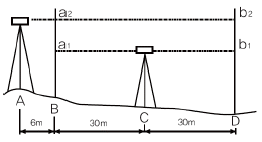
- 1.572m
- 1.576m
- 1.596m
- 1.656m
(정답률: 46%)
45. 축척 1:500 지형도를 이용하여 축척 1:5000 지형도를 제작하려고 한다. 1:5000지형도 상에 들어갈 1:500 지형도는 몇 매가 필요한가?
- 50매
- 100매
- 150매
- 200매
(정답률: 알수없음)
46. 연속적인 다중위치결정체계의 항법체계인 GPS위성의 궤도경사각은 몇 도이고, 적도 면상 몇 도의 간격으로 배치되어 있는가?
- 궤도경사각 55° , 적도면상 55° 간격
- 궤도경사각 55° , 적도면상 60° 간격
- 궤도경사각 60° , 적도면상 55° 간격
- 궤도경사각 60° . 적도면상 60° 간격
(정답률: 55%)
47. 그림과 같이 트래버스의 내각을 관측하였다. CD의 방위는 얼마인가? (단, AB의 방위각은 152° 31' 18” 이다.)
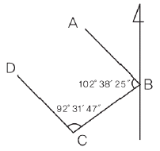
- S47° 21' 06" W
- N42° 38' 54" W
- S42° 38' 54" W
- N47° 21' 06" W
(정답률: 27%)
48. 다음 중 오차의 원인도 불분명하고, 오차의 크기와 형태도 불규칙한 형태로 나타나는 오차는?
- 정오차
- 우연오차
- 착오
- 체계적 오차
(정답률: 75%)
49. 지구의 적도반지름이 6370km 이고 편평률이 1/299이라고 하면 적도반지름과 극반지름의 차이는 얼마인가?
- 21.3km
- 31.0km
- 40.0km
- 42.6km
(정답률: 58%)
50. 그림과 같은 사변형망의 조건식의 총수는?
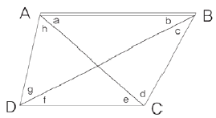
- 2개
- 3개
- 4개
- 5개
(정답률: 59%)
51. 80m의 측선을 20m 줄자로 관측하였다. 1회 관측에 +5mm의 누적오차와 ±5mm의 우연오차가 발생하였다고 하면 정확한 거리는?
- 80.02±0.02m
- 80.02±0.01m
- 80.01±0.02m
- 80.01±0.01m
(정답률: 67%)
52. 삼각측량의 삼각망 조정에서 만족을 요하는 3가지 조건이 아닌 것은?
- 측점조건
- 공선조건
- 각조건
- 변조건
(정답률: 알수없음)
53. GPS측량의 측위법에 대한 설명으로 틀린 것은?
- 단독측위법은 한 개의 수신기에서 4개 이상의 위성을 관측하는 방법이다.
- 상대측위법은 두 개 이상의 수신기에서 똑같은 위성을 동시에 관측하는 방법이다.
- 단독측위법은 전방교회법의 원리에 따라 수신기의 3차원 위치를 결정하는 방법이다.
- 단독측위법은 의사거리를 사용하며 상대측위법에서는 반송파의 위치상(위상변위)를 사용한다.
(정답률: 50%)
54. 도상에서 세변의 길이를 관측한 결과 각각 21.5cm, 30.3cm, 28.0cm 이었다면 실제 면적은? (단, 지형도의 축적 = 1/500)
- 1448m2
- 2896m2
- 5068m2
- 7240m2
(정답률: 39%)
55. 다음 거리측량용 장비 중 가장 정밀한 것은?
- 체인
- 강철 줄자
- 인바 줄자
- 유리섬유 줄자
(정답률: 48%)
56. 다각측량의 특징으로 옳지 않은 것은?
- 거리와 각을 관측하여 계산에 의해 모든 점의 위치를 결정한다.
- 좁은 지역이나 시가지 또는 산림 지역처럼 주변의 시통이 잘 안되는 경우에 유용하다.
- 삼각점이 멀리 배치되어 있어 좁은 지역의 세부측량에 기준이 되는 점을 추가 설치할 경우 적합하다.
- 삼각측량 보다 높은 정확도를 요하는 골조측량에 이용한다.
(정답률: 64%)
57. 교호 수준 측량의 장점이 아닌 것은?
- 시준축오차 제거
- 지구곡률오차 제거
- 광선굴절오차 제거
- 눈금반의 오차 제거
(정답률: 42%)
58. 축척 1:2500 수치지도의 주곡선 간격은?
- 0.5m
- 1.0m
- 2.0m
- 5.0m
(정답률: 64%)
59. GPS 측량의 특징에 대한 설명으로 틀린 것은?
- GPS에 사용되는 좌표체계의 원점은 동경원점이다.
- 날씨, 관측점간의 시통에 관계없이 측량할 수 있다.
- 하루 24시간 어느 시간에나 이용이 가능하다.
- 위성을 추적할 수 있는 공간이 확보되어야 한다.
(정답률: 알수없음)
60. 점의 수평위치와 같이 2차원 상에서의 정밀도는 무엇으로 나타낼 수 있는가?
- 분산
- 표준편차
- 오차타원
- 오차타원체
(정답률: 46%)
4과목: 측량학
61. 다음의 업무내용은 어느 측량업을 설명하는 것인가?
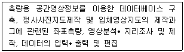
- 공간영상도화업
- 영상처리업
- 수치지도제작업
- 지도제작업
(정답률: 64%)
62. 시• 도 지명위원회는 지명에 관한 심의, 결정사항을 며칠 이내에 국가지명위원회에 보고 해야 하는가?
- 30일 이내
- 15일 이내
- 10일 이내
- 7일 이내
(정답률: 46%)
63. 국토해양부장관은 일반측량을 한 자에게 측량성과 및 측량기록의 사본 제출을 요구할 수 있다. 다음 중 그 목적에 해당되지 않는 것은?
- 측량의 정확도 확보
- 측량의 중복 배제
- 측량에 관한 자료의 수집 및 분석
- 측량 성과의 심사
(정답률: 59%)
64. 대통령령으로 정하는 공공측량에 해당되지 않는 것은?
- 측량실시지역의 면적이 1제곱킬로미터인 평면측량
- 측량노선의 길이가 10킬로미터인 기준점 측량
- 촬영지역 면적인 0.5제곱킬로미터인 측량용 사진촬영
- 측량지역의 길이가 0.5킬로미터인 지하시설물 측량
(정답률: 55%)
65. 우리나라 지도의 주기에 사용할 수 있는 문자를 모두 나타낸 것은?
- 한글，한자
- 한글, 한자, 영자
- 한글, 한자, 영자, 아라비아숫자
- 한글, 한자, 영자, 아라비아숫자, 그림문자
(정답률: 62%)
66. 원칙적으로 기본측량성과를 고시하여야 하는 자는?
- 시•도지사
- 대한측량협회장
- 측량심의위원장
- 국토해양부장관
(정답률: 알수없음)
67. 공공측량의 성과심사에 필요한 세부기준은 누가 정하여 고시하는가?
- 국토해양부장관
- 시 •도지사
- 국토지리정보원장
- 측량협회장
(정답률: 알수없음)
68. 측량수로조사 및 지적에관한법률의 목적과 관련이 없는 것은?
- 수로조사의기준규정
- 지적공부의 작성 및 관리에 관한규정
- 해상교통의 안전
- 공간정보산업 육성
(정답률: 82%)
69. 지도도식규칙에서 사용하는 용어 중 도곽의 정의로 옳은 것은?
- 지도의 내용을 둘러싸고 있는 2중의 구획선을 말한다.
- 각종 지형공간정보를 일정한 축척에 의하여 기호나 문자로 표시한 도면을 말한다.
- 지물의 실제현상 또는 상징물을 표현하는 선 또는 기호를 말한다.
- 지도에 표기하는 지형 •지물 및 지명 등을 나타내는 상정적인 기호나 문자 등의 크기， 색상 및 배열방식을 말한다.
(정답률: 58%)
70. 일반측량업자가 할 수 있는 공공측량의 설계한정 금액은 얼마인가?
- 1천만원이하
- 2천만원이하
- 3천만원이하
- 5천만원이하
(정답률: 알수없음)
71. 다음 중 그 사유가 발생한 날부터 30일 내에 신고 하지 않아도 되는 것은?
- 측량업자의 지위를 승계한 경우
- 지점의 소재지가 변경된 경우
- 측량업등록증을 분실하여 재발급하는 경우
- 측량업자인 법인이 파산 또는 합병 외의 사유로 해산한 경우
(정답률: 73%)
72. 측량업 등록을 하지 않고 측량업을 영위한 자에 대한 벌칙 기준은?
- 3년 이하의 징역 또는 3천만원이하의벌금
- 2년 이하의징 역 또는 2천만원이하의벌금
- 1년 이하의 징역 또는 1천만원이하의벌금
- 300만원 이하의 과태료
(정답률: 50%)
73. 다음 중 우리나라 측량기준점에 속하지 않는 것은?
- 통합기준점
- 공공지자기점
- 지적삼각보조점
- 지적도근점
(정답률: 알수없음)
74. 다음 용어의 정의 중 잘못된 것은?
- 측량이란 공간상에 존재하는 일정한 점들의 위치를 측정하고 그 특성을 조사하여 도면상의 위치를 현지에 재현하는 것으로 지도의 제작 및 도면작성은 제외한다.
- 측량성과란 측량을 통하여 얻은 최종 결과를 말한다.
- 측량업자라 함은 측량 • 수로조사 및 지적에 관한 법률이 정하는 바에 따라 측량업의 등록을 한 자를 말한다.
- 측량기록이란 측량성과를 얻을 때까지의 측량에 관한 작업의 기록을 말한다.
(정답률: 알수없음)
75. 기본측량을 위하여 설치된 측량기준점표지의 이전 신청에 따른 조치 사항으로 옳은 것은?
- 어떠한 이유로도 측량표의 이전은 절대 불가능하다.
- 상당한 이유가 있는 경우에 이전이 가능하며 비용은 어떠한 경우에든지 신청자가 부담한다.
- 상당한 이유가 있는 경우에 이전이 가능하며 비용은 어떠한 경우이든지 국가가 부담한다.
- 이전하지 않고 신청자의 목적을 달성할 수 있는 경우를 제외하고는 측량기준점표지를 이전하여야한다.
(정답률: 47%)
76. 기본측량성과 검증기관의 지정에서 "대통령령으로 정하는 측량관련 전문기관” 이 아닌 것은?
- [국가정보화 기본법]제14조에 따른 한국정보화진흥원
- [정부출연연구기관 등의 설립 •운영 및 육성에 관한법률]및[과학기술분야 정부출연 연구기관등의 설립• 운영 및 육성에 관한법률]에 따른 정부출연연구기관
- [민법] 제32조에 따라 국토해양부장관의 허가를 받아 설립된 측량 관련 비영리법인
- 측량 • 수로조사 및 지적에 관한 법률 제1⑤조 제2항 제3호에 따라 공공측량성과의 심사에 관한업무를 위탁받은 기관
(정답률: 36%)
77. 공공측량에 있어서 직각좌표 기준의 명칭 및 적용범위가 틀린 것은?
- 동부좌표계 : 적용구역 동경 122도~124도
- 서부좌표계 : 적용구역 동경 124도~126도
- 동해좌표계 : 적용구역 동경 130도~132도
- 중부좌표계 : 적용구역 동경 126도~128도
(정답률: 59%)
78. 다음 중 지명의 고시에 포함되어야 하는 사항이 아닌 것은?
- 제정되거나 변경된 지명
- 소재지(행정구역으로 표시한다)
- 위치(경도 및 위도로 표시한다)또는 범위
- 제정되거나 변경의 결정주체
(정답률: 알수없음)
79. 공공측량시행자는 공공측량을 하려면 미리 측량지역, 측량기간, 그밖에 필요한 사항을 누구에게 통지하여야 하는가?
- 시 • 도지사
- 지방국토관리청장
- 국토지리정보원장
- 시장 • 군수
(정답률: 알수없음)
80. 국토해양부장관의 허가 없이 기본측량성과 중 지도 등 또는 측량용 사진을 국외로 반출 할 수 있는 경우가 아닌 것은?
- 대한민국 정부와 외국 정부 간에 체결된 협정 또는 합의에 따라 기본측량성과를 상호 교환하는 경우
- 정부를 대표하여 외국 정부와 교섭하거나 국제회의 또는 국제기구에 참석하는 자가 자료로 사용하기 위하여 지도나 그밖에 필요한 간행물 또는 측량용 사진을 반출하는 경우
- 관광객 유치와 관광시설 홍보를 목적으로 지도 등 또는 측량용사진을 제작하여 반출하는 경우
- 축척 2만 5천분의 1이상의 지도나 그밖에 필요한 간행물을 국외로 반출하는 경우
(정답률: 알수없음)